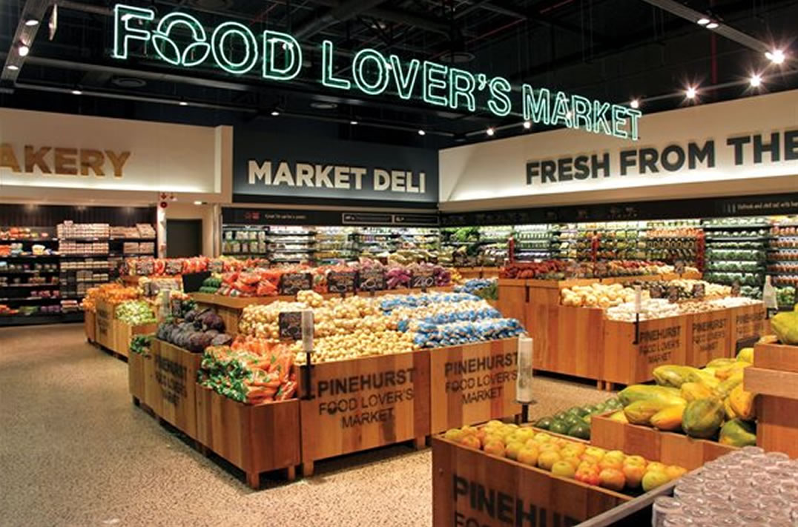

Shopping is as much about the experience as it is about the things you buy. At Food Lover’s Market, we have taken this principle to heart, recreating the ambiance of a fresh marketplace in a modern theatre-of-food setting. Visiting one of our stores truly is an experience like no other. The group has grown to include many partners, such as Food Lover’s Eatery – a deli extension of the brand offering ready to eat meal offerings; FreshStop, the fresh convenience store; Market Liquors and Diamond Discount Liquors, our alcohol brand and Seattle Coffee Company, our coffee partner.
Our supplier partners include Dried Fruit for All, leaders in their industry and supplier dried fruit, fresh and roasted nuts, our famous Christmas cake mix and much more and FVC International – the largest importer and export of fresh produce in South Africa.
